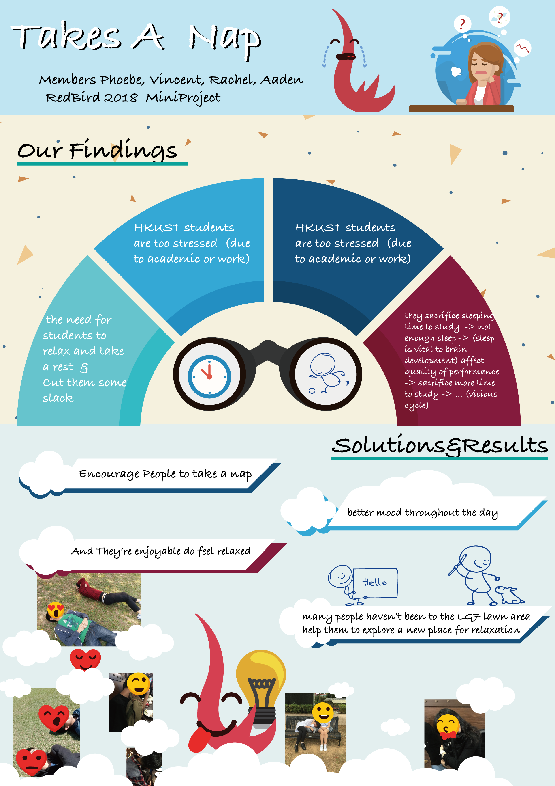

<style>
    body{
      background:black;
      -webkit-animation: fadein 8s; /* Safari, Chrome and Opera > 12.1 */
           -moz-animation: fadein 8s; /* Firefox < 16 */
            -ms-animation: fadein 8s; /* Internet Explorer */
             -o-animation: fadein 8s; /* Opera < 12.1 */
                animation: fadein 8s;
    }
    
    
    
    @keyframes fadein {
        from { opacity: 0; }
        to   { opacity: 1; }
    }
    
    /* Firefox < 16 */
    @-moz-keyframes fadein {
        from { opacity: 0; }
        to   { opacity: 1; }
    }
    
    /* Safari, Chrome and Opera > 12.1 */
    @-webkit-keyframes fadein {
        from { opacity: 0; }
        to   { opacity: 1; }
    }
    
    /* Internet Explorer */
    @-ms-keyframes fadein {
        from { opacity: 0; }
        to   { opacity: 1; }
    }
    
    /* Opera < 12.1 */
    @-o-keyframes fadein {
        from { opacity: 0; }
        to   { opacity: 1; }
    }
    
    article{
      width:80%;
      margin:0 auto;
      padding:50px 50px;
      background:snow;
    }
    
    h1{
      font-family: 'Fjalla One', sans-serif;
      font-size:72px;
      text-align:center;
      text-transform:uppercase;
      letter-spacing:4px;
      word-spacing:10px;
      margin-top:0;
      margin-bottom:20px;
    }
    
    h1 span{
      font-family: 'Playball', cursive;
      font-size:60px;
      text-transform:lowercase;
      position:relative;
      top:-15px 
    }
    .meta{
      border-top:1px solid #333;
      text-align:center;
    }
    
    .meta h2{
      display:inline-block;
      margin:0;
      padding:0 20px;
      background:white;
      position:relative;
      top:-12px;
      font-family: 'Fjalla One', sans-serif;
      font-size:18px;
      text-transform:uppercase;
      letter-spacing:3px;
    }
    
    header{
      margin-bottom:25px;
    }
    section .columns{
      -moz-column-count:3; /* Firefox */
      -webkit-column-count:3; /* Safari and Chrome */
      column-count:3;
    }
    .columns p{
      font-size:18px;
      margin:0 0 10px 0;
      text-indent:10px;
    }
    
    strong{
      margin:0;
    }
    img{
        width:100%;
    }
    blockquote{
      -moz-column-span:all;
      -webkit-column-span:all;
      column-span:all;
      font-family: 'Playball', cursive;
      font-size:32px;
      font-weight:normal;
      border-top:3px solid #333;
      border-bottom:3px solid #333;
      padding:15px 0;
      
    }</style>
    <link href='https://fonts.googleapis.com/css?family=Fjalla+One' rel='stylesheet' type='text/css'>
      <link href='https://fonts.googleapis.com/css?family=Playball' rel='stylesheet' type='text/css'>
      
        <article oncopy="return false" oncut="return false" onpaste="return false">
          <header>
            <h1>Learning Summary <span>for</span> RedBird</h1>
            
            <div class="meta"><h2>Aaden</h2> </div>
          </header>
          <section>
            <div class="columns">
              <p>
                <h4>Learning Summary of Mini Project</h4>
                
                Mini Project is acutuallly is a great stuff and platform for me to enjoy. We form a group and try to provide a stress relieved for our students. HKUST always being sacrasm in stressful academic style and tied course schedules. However, 
               We made it!! Presents you guys our proposal- Takes a nap. We decided it through many different time, and actuallly it's goal is simply but ambitious- to make our students take a rest. Although it's not actually efficient in terms of immedimate effect, it's the symbolic way to let our students to take a rest and don't need to 
                Our groups did great corportation , we try to present our idea in simpliest way and if u want to know more about our project, pleaase refer to the poster above.
                For me , I realized that I'm always focus on the design term and not improve the contents and think carefully . There're some stuffs thatwe actually find the grass is not really suitable for the students to lay on it to have a rest, so we go to have a rest on the place of the charis or others things. Actually we should think and be considerate on this little problem.
                
            </div>
            
    
          </section>
        </article>
    
        